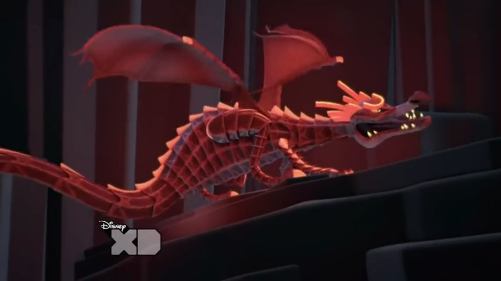

Дракон
 Драконы (или Пак-Драконы) - это большие рептилии с красной чешуей, крыльями и одним глазом. Они часто появляются как враги в Pac-Man и Призрачных приключениях. Их можно увидеть обитающими во многих областях Преисподней, таких как каньоны или просто летающими в небе, но в основном они происходят из вулканической области Преисподней, известной как Долина Драконов.
Внешность
Драконы-это большие крылатые четвероногие рептилии с огромным размахом крыльев, достаточно большим, чтобы нести их в воздухе. Они намного выше среднего жителя Пак-Мира и имеют еще большую длину тела. Они имеют очень ребристый и резкий внешний вид из-за их темно-красных чешуек, которые также иногда светятся. У них острые зубы и длинная морда, и, что самое примечательное, у них только один глаз, как у циклопа.
Способности
Драконы-сильные существа, а также быстрые летуны, которые почти так же быстры или быстрее, чем летающий Пакман. Они также обладают опасной способностью вдыхать огонь в больших и почти бесконечных количествах, а огненное дыхание нескольких драконов, объединенных вместе, может нагреть весь Пак-Мир.
История
Пакман и призрачные приключения
Драконы часто появляются на протяжении всего шоу, когда персонажи посещают Нижний мир, в котором они будут преследовать незваных гостей и пытаться сжечь их заживо. Хотя у них есть несколько заметных ролей в некоторых эпизодах.
Пакман и призрачные приключения (игра)
Драконы появляются в видеоигре Pac-Man и "Призрачные приключения" на уровне "Долина драконов". Один из них сначала летит к Пакману и начинает стрелять в него огненными шарами, затем, как только Пакман уклоняется от них и достигает контрольной точки, начинается битва босса с Драконом посреди озера лавы и начинает стрелять в него шарами из расплавленной лавы. Ледяной Пакман может заморозить магматические шары и выстрелить ими в Дракона, сделав это достаточно раз, чтобы в конечном итоге победить его.